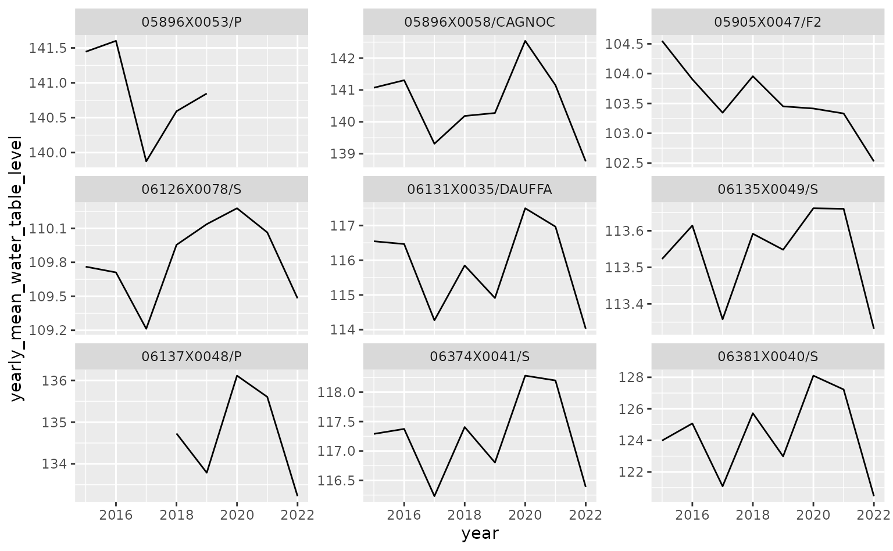

vignettes/example_niveaux_nappes_api.Rmd
example_niveaux_nappes_api.RmdThis vignette shows how to use the hubeau R package
in order to retrieve data from the French piezometric monitoring network
(portail national d’Accès aux
Données sur les Eaux Souterraines, ADES) from the API
“piézométrie” (or “niveaux nappes”) of the Hub’eau portal.
We illustrate the use of this API for the geological layer “Calcaires
et marnes du Dogger du bassin versant du Clain libres”
(code=GG063) with an example of map and chart useful for
the interpretation of these data.
my_water_table_code <- "GG063"First, we need to load the packages used in this vignette for processing data and display results on charts and map:
library(hubeau)
library(dplyr)
#>
#> Attaching package: 'dplyr'
#> The following objects are masked from 'package:stats':
#>
#> filter, lag
#> The following objects are masked from 'package:base':
#>
#> intersect, setdiff, setequal, union
library(sf)
#> Linking to GEOS 3.10.2, GDAL 3.4.1, PROJ 8.2.1; sf_use_s2() is TRUE
library(mapview)
library(ggplot2)
library(purrr)“niveaux_nappes” is one of the 10 APIs that can be queried with the hubeau R package.
The list of the API endpoints is provided by the function
list_endpoints.
list_endpoints(api = "niveaux_nappes")
#> [1] "chroniques" "chroniques_tr" "stations"chroniques long-term time serieschroniques_tr real time observationsstations lists the monitoring stationsThe tables can be joined at least by the field
code_bss (i.e. the site Id).
For each endpoint, the function list_params() gives the
different parameters that can be retrieved.
list_params(api = "niveaux_nappes",
endpoint = "stations")
#> [1] "bbox" "bss_id" "code_bdlisa"
#> [4] "code_bss" "code_commune" "code_departement"
#> [7] "codes_masse_eau_edl" "date_recherche" "fields"
#> [10] "format" "nb_mesures_piezo_min" "page"
#> [13] "size" "srid"Download the data.
stations <- get_niveaux_nappes_stations(
codes_masse_eau_edl = my_water_table_code
)The aim here is to retrieve the time series of water levels measures in the piezometers.
param_chroniques <- paste(
list_params(api = "niveaux_nappes",
endpoint = "chroniques"),
collapse = ","
)No field allows to select a departement, so it is necessary to iterate through stations.
water_table_level <- map_df(
.x = stations$code_bss,
.f = function(x)
get_niveaux_nappes_chroniques(code_bss = x,
date_debut_mesure = "2015-01-01")
)The dataframe is processed to get a ‘year’ and a ‘month’ variables, then averaged by year for each site.
water_table_level <- water_table_level %>%
mutate(date_mesure = lubridate::ymd(date_mesure),
year = lubridate::year(date_mesure),
month = lubridate::month(date_mesure))Selection, for each of the stations, of the years with 12 months of data. This is done to prevent incomplete time periods to influence the yearly mean water level excessively.
yearly_mean_water_table_level <- water_table_level %>%
group_by(code_bss,
year) %>%
summarise(n_months = n_distinct(month)) %>%
filter(n_months == 12) # complete years
#> `summarise()` has grouped output by 'code_bss'. You can override using the
#> `.groups` argument.
yearly_mean_water_table_level <- yearly_mean_water_table_level %>%
select(-n_months) %>%
left_join(water_table_level) %>% # filtering join
group_by(code_bss,
year,
month) %>%
summarise(monthly_mean_water_table_level = mean(niveau_nappe_eau, na.rm = TRUE)) %>%
group_by(code_bss,
year) %>%
summarise(yearly_mean_water_table_level = mean(monthly_mean_water_table_level, na.rm = TRUE)) %>%
ungroup()
#> Joining with `by = join_by(code_bss, year)`
#> `summarise()` has grouped output by 'code_bss', 'year'. You can override using
#> the `.groups` argument.
#> `summarise()` has grouped output by 'code_bss'. You can override using the
#> `.groups` argument.
ggplot(data = yearly_mean_water_table_level,
aes(x = year,
y = yearly_mean_water_table_level)) +
geom_line() +
facet_wrap(~code_bss,
scales = "free_y")